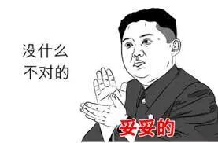
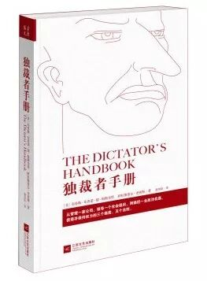
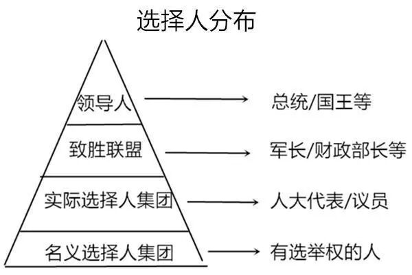

前言
最近看了公众号《大玩家》的一篇名为《漫山遍野的资源诅咒了解一下》的文章，觉得颇有道理。于是应那篇文章推荐去看了《独裁者手册》这本书。这本书现在我刚翻了六分之一，但是书里讲述的“统治者视角”已经颇为清晰。这本书类似于之前我读过另外一本叫《自私的基因》的书，也是提供一种独特的看问题的角度。
芒格在他的《穷查理宝典》中曾经讲过他研究世界的方法，说如果一个人掌握一种思想工具，比如经济学的思考方式，然后把世界上所有的问题都用这种工具去解决，那最终很多问题是没法很好地解决的。这就好比如果一个人做手工艺，手上只有一个锤子，看到什么都用锤子去敲，也不管那是不是钉子，一定做不好手工艺。
好的工匠一定是有一大堆工具，并且熟练掌握各种工具，碰到适合的问题就拿出适合的工具去解决。要想达到这个境界，一是要尽量多的掌握工具，也就是多学习各种思考问题的角度，二是碰到问题多试着用自己学到的各种工具尝试解决，这样可以会对不同工具的特点更加熟悉，把他们用得更好。

两个奇怪的现象
《独裁者手册》提供的就是这样一个工具，用以解释这样两个奇怪的现象。
一： 为什么政治领导人往往总是贪腐的，他们的决策为什么被人骂成那样还不下台？为什么本来很好的人，坐到那个位置上以后，都纷纷变坏了呢？
二：为什么越是资源丰富的国家，那里人的生活越是困苦，政府越是腐败低效。
一个假定
为了解释这些奇怪的现象，独裁者手册首先做出一个假定，即所有的统治者，不管是多民主的国家或者独裁的国家领导人，都有一个最高目标，即维持其统治。
这个假定之所以合理，和经济学中的“理性人假设”之所以合理的原因一致。在现实生活中，我们知道人都或多或少会做出不理性的行为。然而长期来看，做出不理性的行为越多，这样的人就越可能被淘汰。所以经济学关注的，仅仅是一个人要怎么做，才能最好地生存下来，获得最大的利益。
独裁者手册假定统治者会把“维持统治”作为最高目标，是因为越是多做出不利于“维持统治”这件事的统治者，越是容易被淘汰。而我们只需要关注一个统治者要如何不被淘汰就可以了。我们所看到的绝大多数领导人，之所以被我们看见，一定是没有被淘汰，因此一定做出过很多有利于“维持统治”的事情。
领导人统治着谁？
我们首先要分析每一个统治者都会面对的环境，即可能会影响到其统治权的人。
可以影响到一个统治者的统治权的人可以被分为三种，分别是1. 名义选择人集团 2. 实际选择人集团 3. 致胜联盟。
名义选择人包含了所有在选举统治者时至少具有法定发言权的人，比如在美国，就是所有的合格选民。
实际选择人是指那些对领导人的上任确实有重要影响的人，比如在英国指的就是支持多数党议员的选民，实际选择人必然是名义选择人中的一部分。
致胜联盟的成员范围则更小，只包括统治者不可或缺的关键支持者，比如在苏联，致胜联盟由党内一小撮能够选择候选人并控制政策的人组成。
如果我们要概括一下这三个人群的话，简而言之就是：名义选择人=可互相替代者， 实际选择人=有影响者， 致胜联盟=不可或缺者，他们的重要程度依次递进。在不同的国家，这三个人群的数量都不太一样，而这才是形成不同政治格局的最关键力量。

统治者的最佳策略
那么一个统治者要维持其统治，怎么做才是最佳策略呢？作者概括了以下几条法则：
法则一：让致胜联盟越小越好。这个联盟越是小，就意味着统治者只需依赖很少的人就能保持权位，他的控制权就会越大。
法则二：让名义选择人越大越好，这样给实际选择人集团以及致胜联盟中的成员提供了充足的替代支持者，这样他们会更加忠诚，不然就会被踢出这些集团。
法则三：掌控收入的分配，以便把利益分配给自己的致胜联盟让他们保持忠诚。
法则四：不要从你的支持者的口袋里掏钱去改善人民的生活。这很容易理解，跟法则三是类似的。饥饿的人民其实反而更加有利于统治，因为他们不会有精力造反。而且要是让自己的致胜联盟失望的话，他们很有可能转而支持别人。
我们来看看几个实际的例子。在2008年纳尔吉斯飓风之后，缅甸的丹瑞将军控制了外界提供的粮食援助让他的军队支持者把粮食在黑市上倒卖。这完美满足了法则三以及法则四，尽管这样做使得平民大量死亡。
为什么有一些政党赞成移民，尤其是非法移民？看看法则二就知道为什么了。
为什么独裁国家的领导人相对于民主国家的领导人任期长那么多？看看法则一就知道为什么了。
两个奇怪现象的答案
我们看看一开始提出的那两个奇怪现象。
之所以政治领导人贪腐还不下台，而且一上台就贪腐，是因为这些领导人已经做到让致胜联盟相当小了。这造成了两个结果：
领导人不会因为大众的反对而下台，因为他的统治只需要依靠很少的致胜联盟。
领导人必须要贪腐，贪腐的另一面其实是掌控收入的分配，这样他才能回报自己的致胜联盟，以便维持其统治。
至于人们为什么上台以后就开始贪腐，是因为如果不贪腐的话就无法维持致胜联盟的忠诚，所以要么下台要么就要开始贪腐。
之所以越是资源丰富的国家，那里的政治约腐败，是因为资源的丰富带来的是政府可以分配的资源非常多（因为卖国家的资源都是通过国家层面卖出的）。政府可以分配的资源非常多，致胜联盟就越稳固，越不容易被推翻，从而更加纵容了政府的继续腐败。尤其是由于人民的贫困使得他们难以站起来推翻政府（政府要得以被推翻，必须要有致胜联盟的反叛出现，不然力量不足，书中有很多例子）。
看看南美的那些国家，比如阿根廷，巴西，都是这个原因造成国家政府极其腐败。
个人的资源诅咒
大玩家还提到其实个人也有这种资源诅咒的例子，当然逻辑有些不太一样。
在个人身上如果要类比的话，可以这么归纳：“由于个人可以分配的资源非常多，造成这个人固有的做事模式难以被推翻，因此坏的做事方式就很难被修正，一旦资源消失，这个人会一下子陷入窘境。”
我们身边最常见的例子就是拆迁户了。
警惕资源诅咒。
点击上图关注一波。